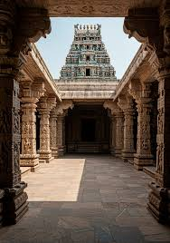
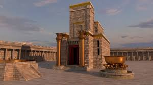
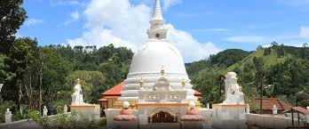
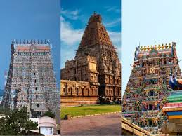

Temple Album
☰
Home
Old
New
Large
Small
Favorite Temples

Salt Lake Temple
Rome Italy Temple
Accra Ghana Temple
Aba Nigeria Temple
Provo City Center Temple

Washington D.C. Temple

Laie Hawaii Temple
Tokyo Japan Temple

Kinshasa DRC Temple